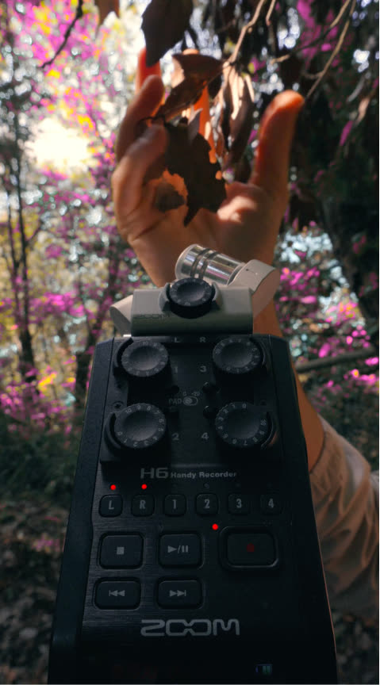

Botteghe Storiche — tema principale
Colonna sonora originale · 2024
Componiamo musiche originali, effetti sonori, sound design per transizioni e prese audio dirette.
Quattro estratti da lavori recenti. Tutto quello che senti è stato scritto, registrato e mixato qui.
Botteghe Storiche — tema principale
Colonna sonora originale · 2024
Cacao Crudo — film di Natale
Sound design · 2023
Beat Skatepark — aftermovie
Musica & mix · 2023
Villa Ada — registrazione ambientale
Registrazione ambientale · 2025
Ogni parte del sonoro è studiata in correlazione al materiale video specifico, garantendo un approccio che arricchisce le immagini.

Hai un progetto in mente?
Scrivici →